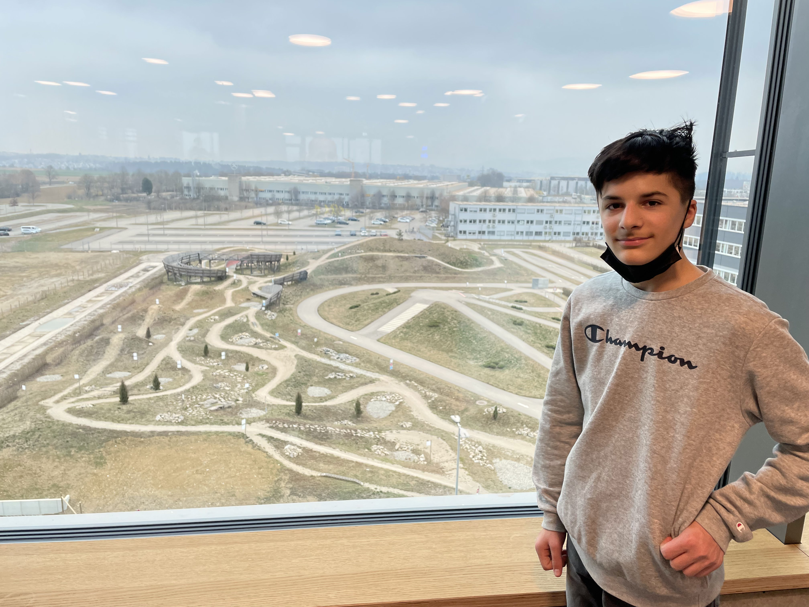

Name: Alessandro Colella
Firma: Bosch eBike Systems
Abteilung: Bosch eBike | Digital
Als erstes wurde mir gezeigt, wo und welche Räume es gibt, Ich bekam einen Laptop, musste mich anmelden und einen Tutorial schauen, wie man mit einem MacBook umgeht. Nach dem Tutorial war ein Meeting um 10 Uhr. Ich habe nur zugehört was der Chef gesagt hat. Nach dem Meeting musste ich ein paar Regale aufräumen. Ich habe auch SIM Karten einsortiert und weggeräumt. Um 12 Uhr gab es Mittagessen. Danach habe ich mit dem Tagesbericht angefangen. Am Ende musste ich einen Text lesen und zusammenfassen.
Auf folgender Webseite ist die Quelle
Mit der eBike Flow App steuerst du alle Funktionen des smarten Systems das den Motor, Akku, Steuereinheit vernetzt. Man kann auch den Fahrmodus nach Eco, Tour, Sport und Turbo anpassen.
Mit der eBike Connect-App kannst du den Bordcomputer mit deinem Handy verbinden. Du kannst auch dein individuelles Trainingsprogramm erstellen und den Bordcomputer mit einem Herzfrequenz-Gurt verbinden.
Die COBI.Bike App zeigt dir sogar an, wie das Wetter auf deiner Tour wird. Du kannst auch Kontakte aus deinem Smartphone anrufen oder deine Touren mit deiner Community teilen. Du kannst auch Musik während der Fahrt hören. Bei einem Unfall sorgt die Premium-Funktion Help Connect für schnelle Hilfe. Die Sensoren erkennen deinen Sturz und alamieren ein Service-Team.
Als ich um 9 Uhr reinkam, musste ich zuhören, wie der Tommi das Fahrsicherheitstraining, den Studenten erklärt. Danach habe ich wieder ein paar Schränke aufgeräumt und musste auch Reifen aufpumpen um zu schauen, ob sie ein Loch haben oder nicht. Nach dem aufpumpen haben wir Burger gegessen. Dann habe ich Schlösser und Schlüssel bekommen und musste schauen, welche Schlüssel reinpassen. Als wir zurück sind, habe ich ein Testhandy bekommen und musste die COBI.Bike App, eBike Connect-App und die eBike Flow App herunterladen. Ich habe mich angemeldet und gesehen, wie man die App benutzt. Nach dem testen habe ich andere Testhandys bekommen und nachgeschaut ob bei den Apps alles in Ordnung ist.
Als ich ankam, musste ich die Schlösser zu den passenden Fahrrädern zuordnen und die Schlüssel mit dem Anhänger zusammen tun. Nach dem zuordnen, musste ich mir Atom herunterladen und erklären was GitHub ist. Danach hatte ich nichts zu tun und habe ein paar Spiele gespielt. Um 12 gab es wieder Mittagessen in der Kantine. Wir haben Kartoffeln mit Spinat und Spiegeleier gegessen. Nach dem Essen musste ich wieder ein paar Regale aufräumen. Um 3 bin ich dann nach Hause gegangen.
GitHub ist ein webbasierter Dienst, der Entwicklern hilft, ihren Code zu speichern und zu verwalten sowie Änderungen an ihrem Code zu verfolgen und zu kontrollieren.
Die Versionskontrolle ist ein Verfahren zur Verfolgung und Verwaltung von Änderungen an Softwarecode.
Git ist ein Open-Source-Versionskontrollsystem, das 2005 von Linus Torvalds entwickelt wurde.
Bei eBike Digital benutzt man GitHub für die Versionsverwaltung von Quellcode.
Die Flow App wird durch die Testflight App überprüft und in dem App Store reingestellt.
Ich musste um 6 Uhr Morgens aufstehen, weil wir um 7 Uhr schon nach Kusterdingen fahren mussten. Wir kamen ungefähr um 10 Uhr an. Als wir reinkamen, wurde uns erst gezeigt, wo die wichtigsten Räume sind. Es gibt insgesamt 5 Stockwerke. Wir waren im 4ten. Als erstes waren wir bei der Waschmaschine für eBikes. Leider konnten wir nicht sehen, wie ein eBike sauber gemacht wird, weil die Maschine kaputt war.
Nach der Waschmaschine, sind wir zur Schreddermaschine gewechselt. Wir haben kaputte Sachen, die man nicht mehr benutzen kann reingetan und zugeschaut wie man Dinge mit einer Schreddermaschine zerstört.
Ich durfte mit dem eBike auf den Trails fahren. Da waren auch coole Parcours und Hindernisse. Leider durfte ich nur 10 Minuten fahren. Danach sind wir wieder hoch und haben uns ausgeruht. Am Ende sind wir so um 6 Uhr nach Hause gefahren.
1. Kusterdingen - Zentrale
2. Frankfurt - Softwareentwicklung
3. Lund (Schweden)
Als ich ankam, musste ich den Tagesbericht von gestern noch fertig schreiben. Ich musste auch die Ladekabel für die eBikes sortieren und ich musste auch mit einem Label Maker die eBikes beschriften. Um 12 gab es wieder Mittagessen. Am Ende musste ich Wasser auffüllen und damit die eBikes sauber machen.
Ich kam an und musste die SmartphoneHubs abmachen und neue dran machen. Um 12 gab es wieder Mittagessen. Nach dem Essen kam Szymon zu mir und hat mir erklärt, wie man eine eigene Webseite erstellt. Man kann Webseiten mit Codes über GitHub erstellen.
Ich habe mein Tagesbericht von gestern noch fertig geschrieben und gewartet, bis ich eine Aufgabe bekomme. Ich habe einen Kennzeichen für ein eBike bekommen und musste den alten abmachen und den neuen dran machen. Um 12:30 sind wir zu einer Pizzeria und haben Pizza gegessen. Als wir wieder ankamen, musste ich mit meiner Webseite weitermachen und die Grundlagen von CSS wissen. Am Ende musste ich noch 2 eBikes waschen und sauber machen.
Als ich ankam, habe ich meinen Tagesbericht von gestern noch fertig geschrieben. Um 10 Uhr hatte ich ein Meeting mit Szymon. Er hat mir erklärt, wie man Links und Bilder einfügt und was man alles noch mit GitHub machen kann.